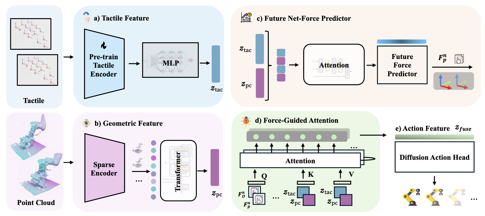
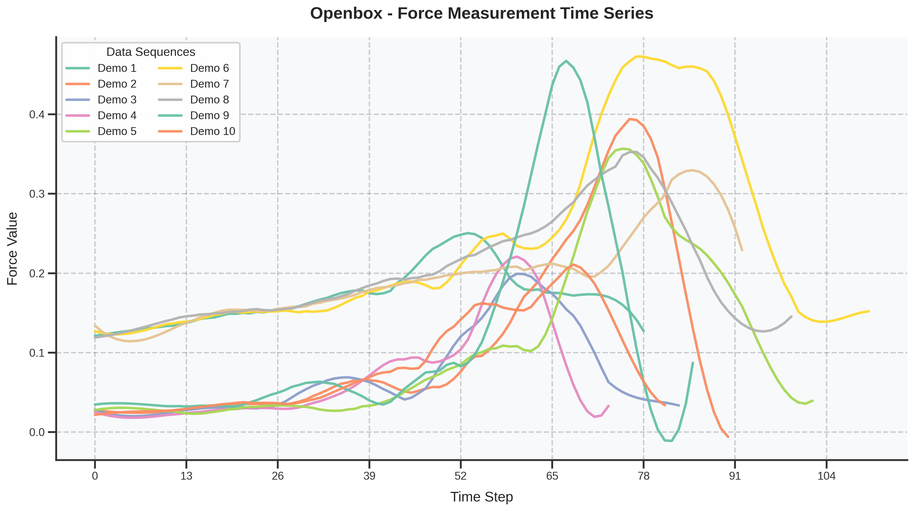
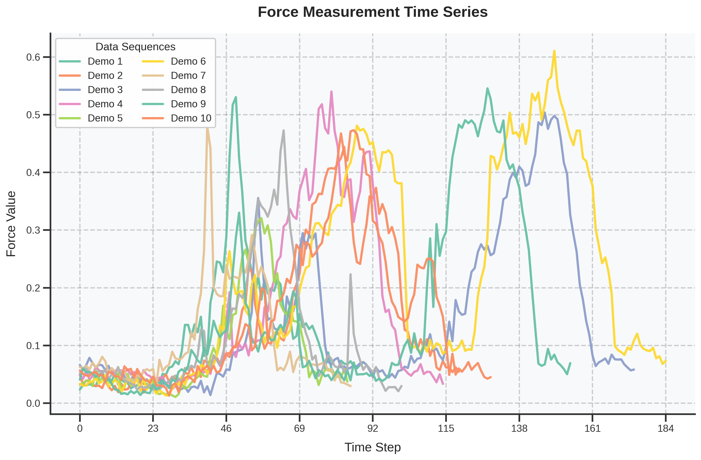
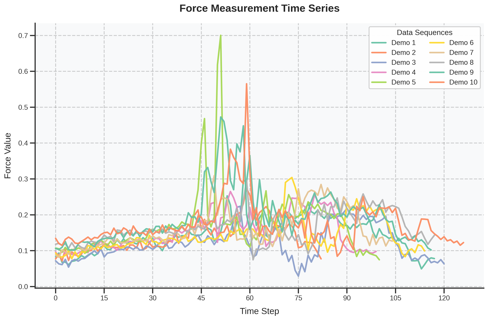

To validate the generalization of our method, we conduct experiments on all tasks using various objects with different colors and geometries, and the results are shown in the table below:
| Task | Open Box | Reorient | Flip | Avg |
|---|---|---|---|---|
| Success Rate | 75% | 63% | 75% | 71% |
Effectively utilizing multimodal data is important for a robot to generalize across diverse tasks. However, the heterogeneous nature of these modalities makes fusion challenging. Existing methods propose strategies to obtain comprehensively fused features but often ignore the fact that each modality requires different levels of attention at different manipulation stages. To address this, we propose a force-guided attention fusion module that adaptively adjusts the weights of visual and tactile features without human labeling. We also introduce a self-supervised future force prediction auxiliary task to reinforce tactile modality, improve data imbalance, and encourage proper adjustment. Our method achieves an average success rate of 93% across three fine-grained, contact-rich tasks in real-world experiments. Further analysis shows that our policy appropriately adjusts attention to each modality at different manipulation stages.

(a) We use a pre-trained tactile encoder to encode 3D tactile signals. (b) We use a sparse encoder to encode the point cloud data. (c) The encoded visual and tactile features are used to predict the future net force. (d) The predicted future net force is combined with the observed net force to guide visual-tactile fusion through an attention mechanism. (e) The fused action feature is used as a condition for learning the dexterous manipulation policy.
We randomly selected 10 expert demonstrations from three tasks to illustrate the variations in net force values during task execution. The data shows that due to environmental noise (especially in the flip task) and task variations, pre-defining precise contact force thresholds is extremely challenging. Setting appropriate force thresholds is difficult in practical robotic applications, as force values inevitably change during manipulation, even within the same task. Additionally, various environmental noises directly affect the effectiveness of thresholds, making statically predetermined thresholds inadequate for the dynamic requirements of real-world operations.



Note: The scores reported below represent the corrected and accurate results for our generalization evaluation across three tasks.
To validate the generalization of our method, we conduct experiments on all tasks using various objects with different colors and geometries, and the results are shown in the table below:
| Task | Open Box | Reorient | Flip | Avg |
|---|---|---|---|---|
| Success Rate | 75% | 63% | 75% | 71% |